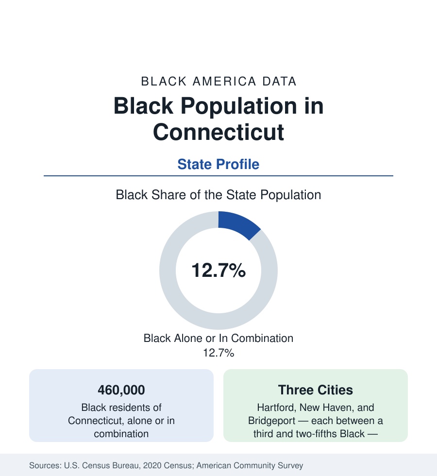

Black Census
Black Population in Connecticut: Wealth Next Door to Want
About 460,000 Black Connecticut residents — one in eight — in the state of America's sharpest rich-poor adjacency. The census profile.

Connecticut holds about 460,000 Black residents — Black alone or in combination — roughly one in eight of its people, with Black alone at about 361,000, or 10 percent. No state's Black profile is more defined by adjacency: Connecticut records among the highest overall incomes in the nation and, inside the same small geography, three of its most fiscally strained cities — each of them between a third and two-fifths Black. The state's Black population is urban, old in its roots, and increasingly suburban. This article profiles it in the census data.
The Three Cities
Hartford, the capital and insurance city, is roughly two-fifths Black within its 121,000 residents — the North End's districts (Blue Hills, Upper Albany, Clay-Arsenal) form one of New England's largest Black communities — with a metro Black population in the range of 135,000 to 150,000 spread through Bloomfield (a majority-Black suburb), Windsor, East Hartford, and Manchester. New Haven, the university city, is roughly a third Black — Dixwell and Newhallville the historic districts — with Yale's institutional economy overlaying a community whose indicators sit far from the university's endowment data. Bridgeport, the state's largest city at 148,000, is roughly a third Black, the old manufacturing center of the coast, with Stratford and the valley towns adjoining. Between and beyond them: Stamford (roughly a seventh Black and growing), Norwalk, Danbury, Waterbury (roughly a fifth), New Britain, and the naval community at New London and Groton, each with established communities.
Roots: An Old New England Community
Black Connecticut's roots are colonial-era deep — the state held enslaved people into the gradual-emancipation era, free Black communities formed in its port and farm towns, and its Black institutions (Hartford's and New Haven's churches, some dating to the early nineteenth century) are among New England's oldest. The modern population was built in two waves: the manufacturing migration of the war decades into Hartford's insurance-and-factory economy, New Haven's arms and manufacturing plants, and Bridgeport's great factories; and the late-century Caribbean migration, which made Connecticut's Black population one of the most West Indian in the nation — Jamaican communities in Hartford (whose West Indian parade and institutions are the region's signature), Bloomfield, and Bridgeport are the census's clearest Caribbean concentration outside Florida and New York. The foreign-born share of Black Connecticut runs well above the national Black average in consequence.
The Adjacency Problem in the Data
Connecticut's numbers must be read with its municipal structure in mind: 169 small towns, each its own school district and tax base, in a state with no county government. The finance data of the education section therefore show their sharpest form here — wealthy suburbs taxing some of the nation's richest property bases beside cities whose grand lists cannot fund their schools at comparable levels, with the state's equalization aid and its court-supervised remedies the standing counterweights. The housing data follow: Black Connecticut's suburbanization into Bloomfield, Windsor, and the valley suburbs is the population's success story in the same tables that record the three cities' concentrated poverty — a two-speed state compressed into distances of ten miles.
Institutions and Change
The state has no HBCU; Black higher education runs through UConn, the state universities (Central Connecticut State in New Britain carries a distinctive share), Yale's small Black enrollment in its own city, and Trinity and the Hartford institutions. The estimates show a slowly growing population — the suburbs and the Stamford corridor gaining, the three cities' totals roughly stable, their Black shares edging down as Latino populations grow faster. Attainment and income for Black Connecticut in aggregate run near the national figures; the city-suburb spread within the state is the widest in New England and among the widest in this reference.
Reading the Connecticut Numbers
The health data of the public health section place Black Connecticut in the Northeast's characteristic position — outcomes generally better than the national Black figures on the major mortality measures, with the access and neighborhood gaps of the three cities reproducing, at New England scale, the same intra-state spreads the larger states show. The aging data add the newest layer: the Caribbean migration generation is now entering the senior counts, and the state's Black senior population is among the most foreign-born in the nation.
Connecticut is the adjacency profile: the richest state's Black population, distributed between three strained cities and the suburbs ringing them, with outcomes that depend almost entirely on which side of a town line an address falls. No profile in this section rewards the tract-level read more.
More in Black Census
The Black Population of the United States: Size, Definitions, and Distribution
The Black population of the United States totals 52.8 million — 15.4 percent of the nation. How the Census Bureau defines and counts the population, and where it lives.
Black Median Household Income in the United States
Black median household income stands at $56,490 in the Census Bureau's annual income report — how the figure is measured, how it compares, and what drives it.
The Black Poverty Rate: Levels, Children, and the Long Trend
The official Black poverty rate is 17.1 percent — against 11.1 percent nationally and 7.7 percent for non-Hispanic White Americans. How poverty is measured and what the data show.
Source: U.S. Census Bureau, 2020 Census; American Community Survey; Population Estimates Program.